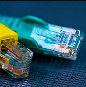

CURSO DE REDES
Una red de computadoras, tambien llamada red de ordenadores, red de comunicaciones de datos o red informatica , es un conjunto de equipos informaticos y software conectados entre si por medio de dispositivos físicos que envian y reciven impulsos electronicos, ondas electromagneticas o cualquier otro medio para el transporte de datos, con la finalidad de compartir informacion, recursos y ofreser servicios.

Como en todo proceso de comunicacion se requiere de un emisor, un mensaje, un medio y receptor. la finalidad principal para la creacion de una red de computadoras es compartir los recursos y la informacion en la distancia, asegurar la confiabilidad y la disponibilidad de la informacion, aumentar la velocidad de la transmicion de los datos y reducir el costo general de estas acciones. Un ejemplo es internet, la cualquieres una gran red de millones de computadoras ubicadas en distintos puntos del planeta interconectados basicamente para compartir informacion y recursos.
La estructura y el modo de funsionamiento de las Redes informaticas actuales estan definidos en varios estándares, siendo el mas importante y extendido de todos ellos el modelo TCP/IP basado en el modelo de referencia OSI. Este ultimo, estructura cada red en siete capas con funsiones concretas pero relacionadas entre si; en TCP/IP se reducen a cuatro capas, los cuales tambien estan regidos por sus respectivos estándares.